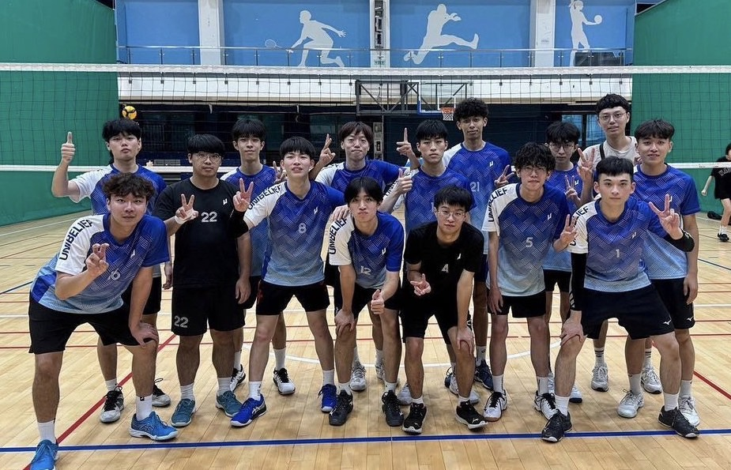
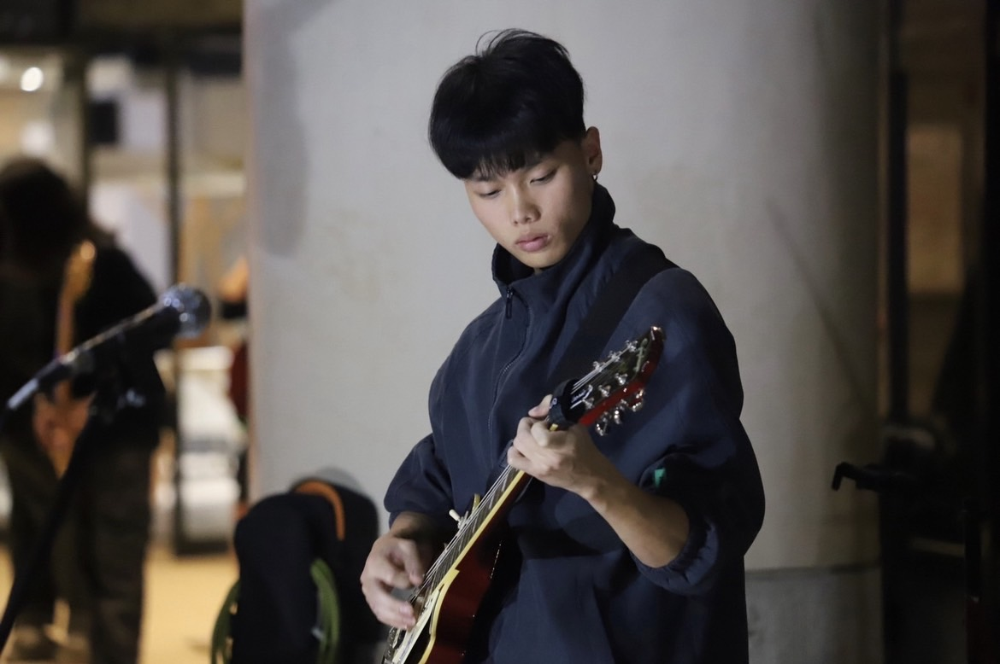
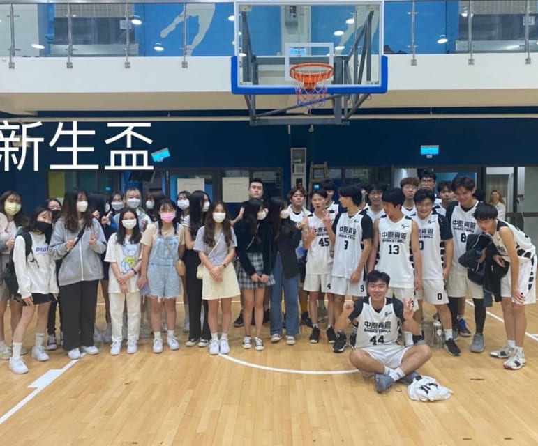
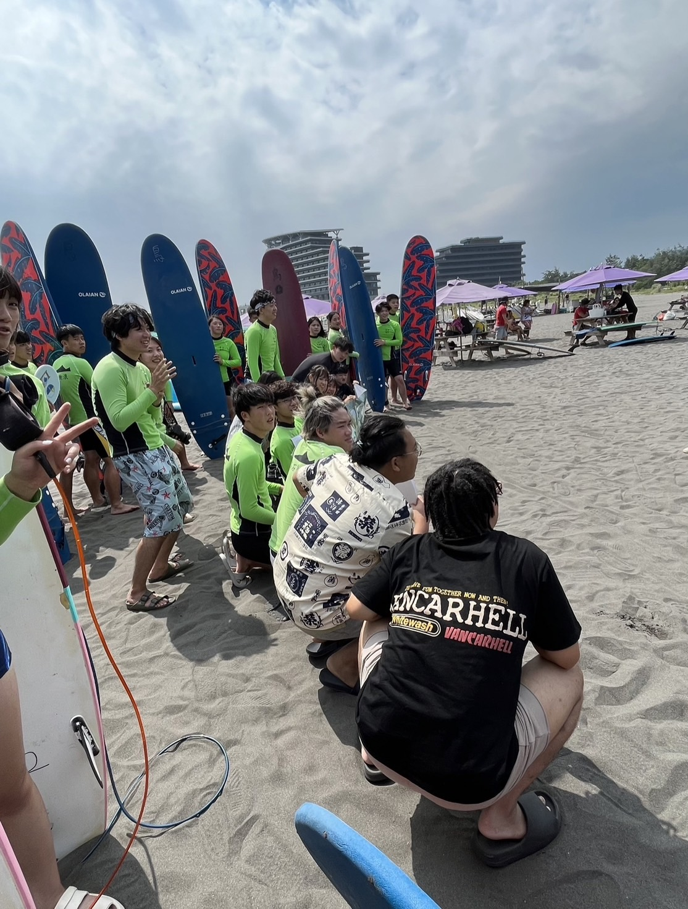

夏煒宸
2004.11.07
New Taipei City
:「人不能創造時機，但可以抓住已經出現的時機」
經歷
-
排球系隊 
上大學才開始認真訓練排球，但我對排球展現出了濃厚的興趣。我深知我還不是一個能獨當一面的球員，所以我幾乎不會缺席練習。 大一下的系際盃我隨隊拿下了亞軍，雖然我目前出場時間不多， 但我知道我還有三年可以努力變強，我會在這段時間提升實力，目標在大二系際盃有更多出場空間。
-
樂團表演 
我自國中就開始接觸各種樂器，高中時在學校熱音社擔任公關與吉他教學，除了與同好一起玩音樂也和友校一起辦表演，大學也一樣加入了熱音社。對 我來說，和團員一起享受舞台氛圍，以及各種樂器交織的化學效應都是無可取代的快樂。
-
籃球系隊 
上大學前主要從事的運動是籃球，我在大一上加入了系籃，大一的新生盃我們系隊從預賽一路過關斬將，最終取得新生盃冠軍。 我在系籃中學會了團隊合作的重要性，一個人強不代表什麼，全隊強才能奪冠，同時也結識了不同年齡層的朋友。
-
衝浪 
這對我來說是個很新鮮的體驗，原本只是因為有打折才跟朋友一起去報名水上休閒活動社，結果參與了第一場活動也就是衝浪以後，我對水上運動的興趣就像被打開開關。 一開始衝浪時總是摔進海裡瘋狂吃水，經過幾次的嘗試我慢慢可以在浪頂馳乘，十分有成就感。
打工經驗
迪卡儂

身為熱愛運動的人，我加入了也是運動性質的迪卡儂， 這個公司主要在為運動者提供服務，我在迪卡儂學習到了許多專業知識， 例如如何跟客人介紹產品、如何處理商品訂單還有怎麼去和物流公司溝通。 迪卡儂同時也是一個注重團隊合作的公司，我們常常聚在一起討論如何提升店內的收益， 並且也會在下班時一起去運動，我十分享受這份工作。
薩莉亞
之前還做過餐廳的工作，我在薩利亞主要擔任內場的職位， 在這份工作中我學了很多義大利菜的做法，比如義大利麵、披薩、烤田螺。 雖然在剛開始時沒有很熟悉，披薩常常捏的很醜，但經過一段時間的努力我越來越熟練， 慢慢可以做出更美味的餐點。在薩利亞打過工後我現在日常生活中也會自己煮義大利麵來吃。
聯絡方式
Email: hihi931107@gmail.com
© 2024 WeiChen Hsia